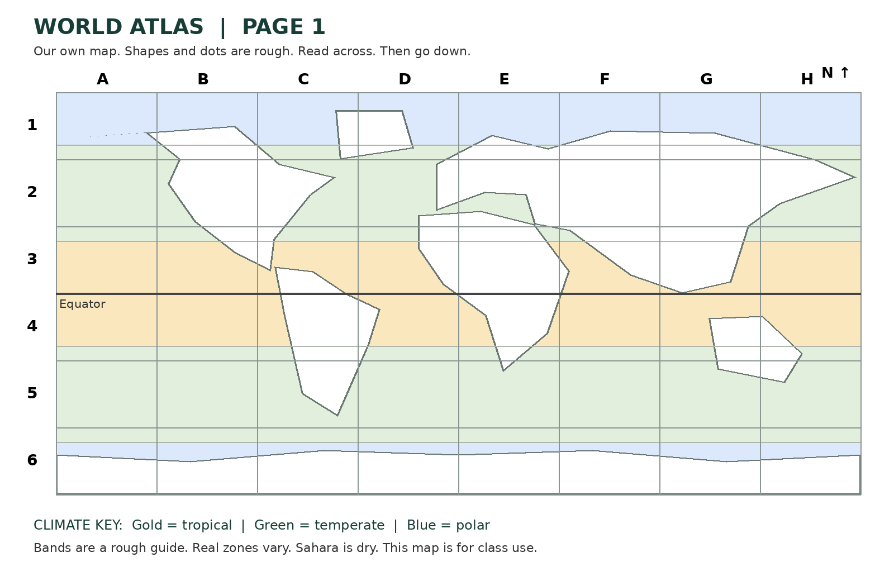

Friday 26 February 2027 | P2 | 40 minutes | Year A
Humanities · GROW · Spring 2 Week 1 · HUM-GROW-S2-W01
Learning outcome: Use atlases and maps to locate climate zones and hazards.
You may point, write, type, speak in private or direct a scribe. You may pass. Reading aloud is your choice.

| Place | Box | Clue |
|---|---|---|
| Amazon Basin | C4 | Tropical |
| Mediterranean | E2 | Temperate |
| Arctic | E1 | Polar |
| Japan | H2 | Earthquake |
| Indonesia | G4 | Volcano |
| Sahara | E3 | Dry |
| Iceland | D1 | Earthquake and volcano |
In your book, use a blank map. Label the Amazon Basin, the Mediterranean and the Arctic with their climate zones. Plot a circle for earthquake hazard in Japan and a triangle for volcano hazard in Indonesia. Add a key. Use the index and grid to check each place.

I found ____ in box ____. The key shows ____. This place has ____.
Use the agreed quiet signal for a pause. Stay with the adult in the usual place. Rejoin with one map check. A neutral shape task is ready.
Print with your browser Print command or open the PDF.